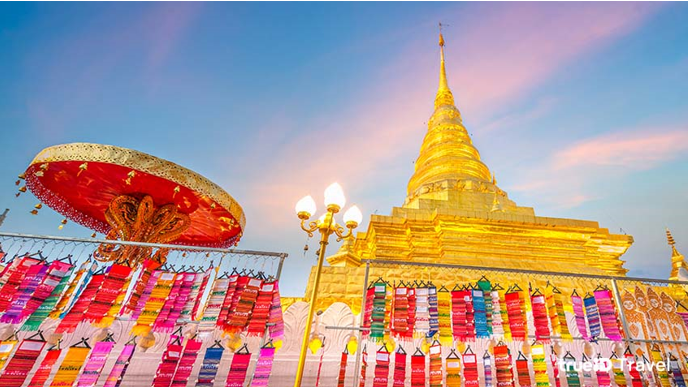
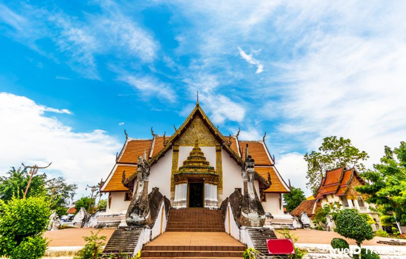
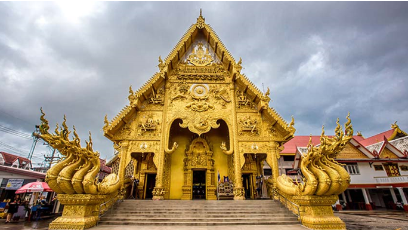
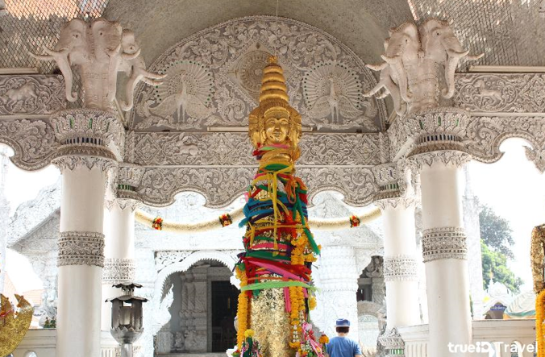
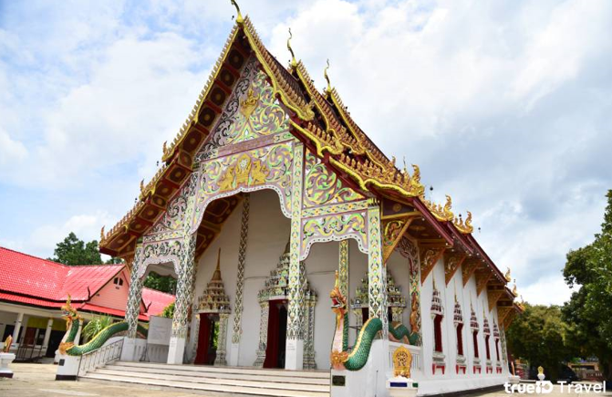
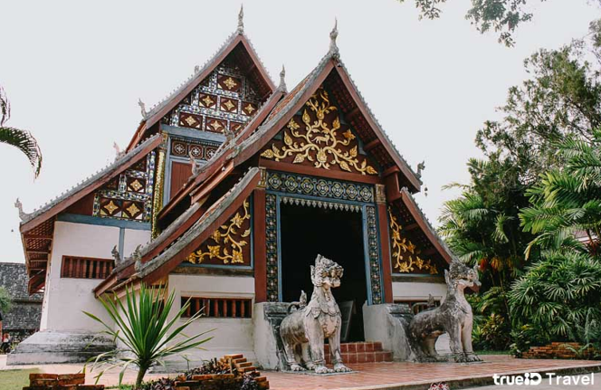
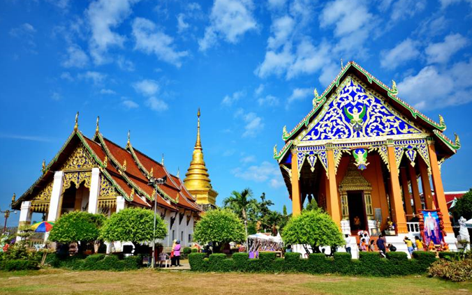
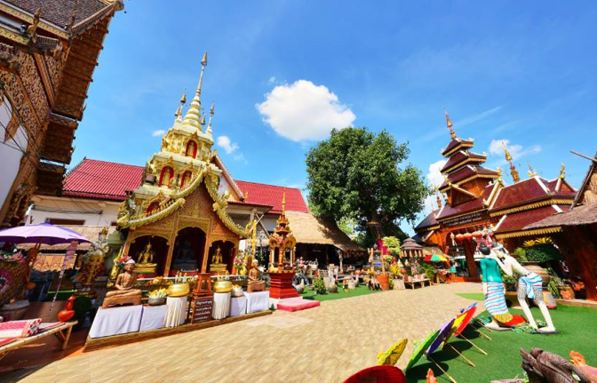

เริ่มทริปสายบุญด้วย วัดพระธาตุแช่แห้ง วัดคู่บ้านคู่เมือง น่าน มานับ 600 ปี สร้างขึ้นเมื่อปี พ.ศ. 1891 เพื่อบรรจุพระบรมสารีริกธาตุ องค์เจดีย์พระธาตุสูง 55.5 เมตร ฐานเป็นทรงสี่เหลี่ยมจตุรัส บุด้วยทองเหลือง หรือ ทองจังโก เป็นศิลปะที่ได้รับอิทธิพลมาจาก เจดีย์พระธาตุหริภุณไชย จังหวัดลำพูน ส่วนหน้าบันของประตูทางเข้าเป็นลายนาคเกี้ยว เป็นเอกลักษณ์เฉพาะของช่างฝีมือชาวน่าน นอกจากความสวยงามแล้ว พระธาตุองค์นี้ยังมีความศักดิ์สิทธิ์ สามารถขจัดปัดเป่าโรคภัยต่างๆ ให้แก่ผู้ที่เดินทางไปกราบไหว้ อีกทั้งยังเป็นพระธาตุประจำ ปีเถาะ ที่ชาวปีเถาะควรไปกราบไหว้ เสริมสิริมลคลสักครั้งในชีวิตค่ะ

พิกัด : วัดพระธาตุแช่แห้งถ้าพูดถึงสัญลักษณ์เมืองน่าน ก็ต้องนึกถึง วัดภูมินทร์ กับภาพจิตกรรมฝาผนัง ปู่ม่านย่าม่าน หรือ กระซิบรัก วาดโดย หนานบัวผัน จิตรกรเชื้อสายไทลื้อ ที่เมื่อใครไปทำบุญก็ต้องมาชมภาพจิตรกรรมนี้ให้เป็นขวัญตา ในส่วนของสถาปัตยกรรม สิ่งที่ทำให้ วัดภูมินทร์ มีความแปลกตาและโดดเด่นจากวัดอื่นในประเทศไทยคือ การสร้าง พระอุโบสถ เป็นทรงจตุรมุข ตรงบันไดทางเข้าอุโบสถมีพญานาคขนาดใหญ่ขนาบทั้งสองด้าน เมื่อเข้าไปในประอุโบสถ จะพบกับพระพุทธรูปขนาดใหญ่ 4 องค์หันหน้าออกตามประตูทั้ง 4 ทิศ รอบๆ มีจิตรกรรมฝาผนังที่บอกเล่าถึงนิทานชาดก และวิถีชีวิตภูมิลำเนาชาวน่าน เป็นภาพที่เก่าแก่ และสวยงามมากๆ ค่ะ

พิกัด : วัดภูมินทร์วัดศรีพันต้น เป็นวัดเก่าแก่ที่มีอายุราวๆ 600 ปี สร้างโดย พญาพันต้น เจ้าเมืองน่านแห่งราชวงศ์ภูคา โดดเด่นด้วยพระวิหารสีทองอร่าม ดูวิจิตรตระการตา พร้อมประติมากรรมปูนปั้น พญานาคเจ็ดเศียร ตรงทางขึ้นบันไดที่ดูยิ่งใหญ่รับกับพระวิหารเป็นอย่างดี ด้านในมีภาพจิตกรรมฝาผนังวาดโดยช่างฝีมือชาวน่าน บอกเล่าเรื่องราวในพุทธประวัติ และประวัติศาสตร์เมืองน่าน มีลวดลายอ่อนช้อยประณีตและอลังการในคราเดียวกัน

พิกัด :วัดพระธาตุดอยคำวัดมิ่งเมือง เป็นหนึ่งในวัดสำคัญของ น่าน เพราะเป็นที่ประดิษฐาน เสาหลักเมือง ของจังหวัด มีลักษณะเป็นท่อนซุงขนาดใหญ่เท่าสองคนโอบ เดิมเป็นวัดร้างที่มีเพียงเสาหลักเมืองเท่านั้น จนกระทั่งราวๆ ปี พ.ศ. 2400 เจ้าอนันตวรฤทธิเดช เจ้าครองนครน่านก็ได้สถาปนาวัดแห่งนี้ขึ้นใหม่ ชื่อว่า วัดมิ่งเมือง นอกจากนี้ที่นี่ยังเป็นที่รู้จักในเรื่องความวิจิตรงดงามของพระอารามที่ตกแต่งด้วยสีขาวดูสะอาดตา ตามผนังด้านนอกมีลายปูนปั้นที่วิจิตรบรรจง แกะสลักโดยตระกูลช่างเชียงแสน ส่วนด้านในมีจิตรกรรมฝาผนังที่สะท้อนให้เห็นถึงวิถีชีวิตของชาวเมืองน่าน วาดโดยช่างท้องถิ่นในปัจจุบัน

พิกัด : วัดมิ่งเมืองวัดปรางค์ ตั้งอยู่ในอำเภอปัว เป็นหนึ่งใน Unseen ของจังหวัดน่านที่มี ต้นดิกเดียม ต้นไม้มหัศจรรย์ผิดธรรมชาติ เพราะเมื่อเราเข้าไปแตะที่ส่วนใดส่วนหนึ่ง ต้นไม้ต้นนี้จะขยับราวกับจั๊กกะจี้ นอกจากนี้ยังหันหลังให้แดดอีกด้วย ซึ่งผิดกับต้นไม้ทั่วไปที่มักหันหน้าเข้าหาแดด ด้านในวัดมี พระธาตุบุญนาค องค์เจดีย์ทรงระฆังแบบพิเศษที่ชาวน่านเชื่อว่ามีพระธาตุบรรจุอยู่ด้านใน โดยกรมศิลปากรได้ขึ้นทะเบียนให้ พระธาตุบุญนาค เป็นโบราณสถานเป็นที่เรียบร้อยค่ะ

พิกัด : วัดปรางค์วัดหนองบัว เป็นวัดของชาวไทลื้อที่ย้ายถิ่นฐานจาก มณฑลยูนาน ประเทศจีน มาอยู่ตามจังหวัดทางภาคเหนือ ซึ่ง น่าน คือหนึ่งในนั้น มีการสันนิษฐานว่าวัดแห่งนี้สร้างขึ้นเมื่อ พ.ศ. 2405 สมัยรัชกาลที่ 4 โดยสถาปัตยกรรมสะท้อนให้เห็นถึงศิลปะไทลื้อได้อย่างสมบูรณ์และสวยงามมากที่สุดแห่งหนึ่งในประเทศไทยเลยค่ะ

พิกัด : วัดหนองบัววัดพระธาตุช้างค้ำวรวิหาร ตั้งอยู่ตรงข้ามกับ พิพิธภัณฑสถานแห่งชาติน่าน เป็นวัดที่มีอายุยาวนานกว่า 600 ปี ด้านในประกอบไปด้วย เจดีย์ช้างค้ำ ที่ประดิษฐานพระบรมสารีริกธาตุ องค์เจดีย์เป็นทรงลังกา รอบๆ มีรูปปั้นช้าง 6 ตัวประดับราวกับเป็นฐานรองรับ นอกจากนี้ยังมี หอไตรวัดช้างค้ำวรวิหาร มีโครงสร้างคล้ายวิหารและโบสถ์ที่สะท้อนถึงศิลปะล้านนาไทยอย่างชัดเจน

พิกัด : วัดพระธาตุช้างค้ำวรวิหารอีกหนึ่งวัดเก่าแก่เมืองน่าน วัดสวนตาล สร้างขึ้นตั้งแต่ปี พ.ศ. 1955 โดย พระนางปทุมมาวดี ชายาของ พญาภูเข็ง เจ้านครน่าน ตั้งอยู่ในบริเวณของ สวนตาลหลวง นอกกำแพงเมืองน่านทางทิศเหนือ วัดแห่งนี้เป็นที่ประดิษฐานของ พระเจ้าทรงทิพย์ พระพุทธรูปสำริดปางมารวิชัยองค์ใหญ่ที่ พระเจ้าติโลกราช เจ้านครเชียงใหม่ทรงโปรดสร้างขึ้นเพื่อแสดงถึงชัยชนะในการยึดเมืองน่าน เมื่อปี พ.ศ. 1993 ปัจจุบัน พระเจ้าทรงทิพย์ กลายเป็นพระพุทธรูปศักดิ์สิทธิ์ที่ชาวน่านเคารพศรัทธาเป็นพระคู่บ้านคู่เมือง และหลั่งไหลเข้ามากราบไหว้ไม่ขาดสาย
วัดศรีมงคล หรือ วัดบ้านก๋ง เป็นวัดสวยเก่าแก่ประจำจังหวัดน่านที่เหมาะแก่การไปไหว้พระทำบุญ ชมวิวทุ่งนาสวยๆ และเดินชมพิพิธภัณฑ์ที่จัดแสดงภาพวาดและวัตถุโบราณต่างๆ ที่เป็นภูมิปัญญาทางล้านนา เดิมที่นี่เคยเป็นวัดร้างมาก่อน จนกระทั่งชาวบ้านได้นิมนต์ หลวงปู่ครูบาก๋ง มาประจำที่ วัดบ้านก๋ง แห่งนี้ ท่านได้พัฒนาวัดและเผยแพร่พระธรรมคำสอนของพระพุทธศาสนา ทำให้วัดแห่งนี้กลายเป็นที่รู้จักในวงกว้างและมีคนเคารพศรัทธามากมาย

พิกัด : วัดศรีมงคล